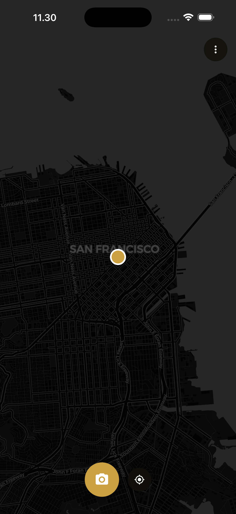

European airspace · Hybrid threat
Hybrid warfare is a reality in Europe.Play your part in our defence.
What it is
Two ways to put a drone on the map.
01 · Static
See a drone and photograph it. One report carries your position, the bearing, and the time.
02 · Live
Hovering overhead? Hold your phone up and track it live — the app follows where you point, in real time.
Alone, a sighting is noise. Together they become one live picture of the sky: watch it unfold, or rebuild a drone's path after it's gone.

Live in beta
The network is live. Add your eyes to it.
Drone Reporter is in beta on iPhone. Join through TestFlight and start reporting today.
Beta opening soon